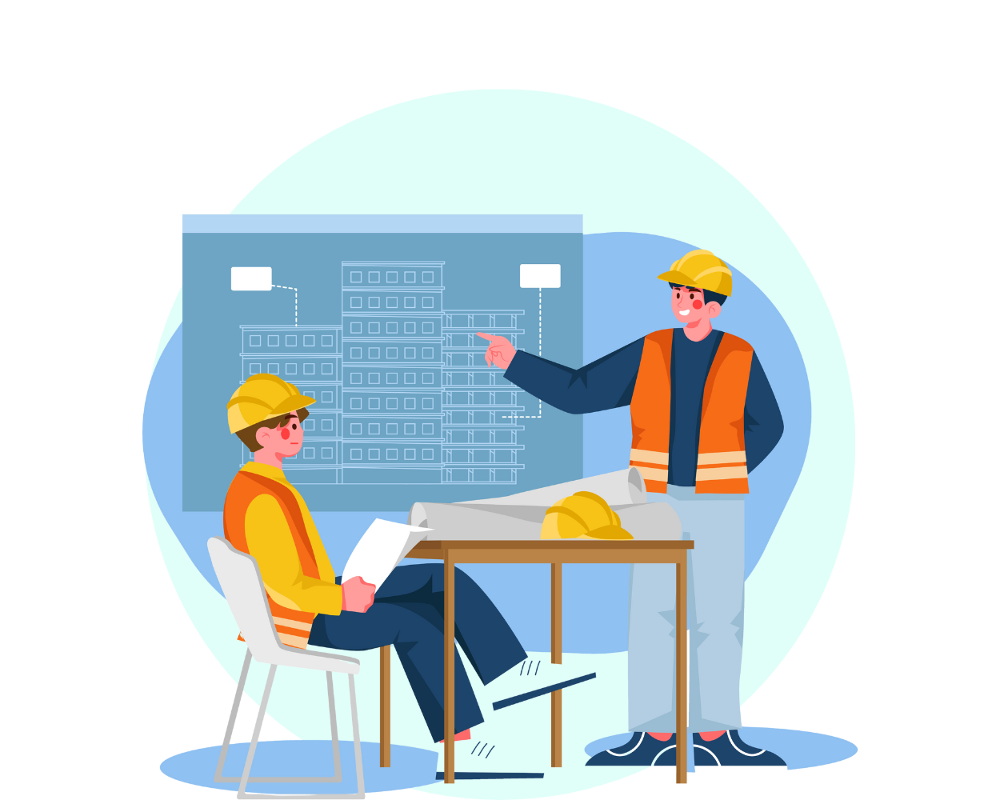

En effektiv tidsplanering är avgörande för att säkerställa en god arbetsmiljö på
byggarbetsplatsen. Klicka på knapparna för att läsa mer om de viktigaste aspekterna:

Realistisk tidsplan
Det är viktigt att skapa en tidsplan som är realistisk och tar hänsyn till alla delar
av projektet, inklusive produktion av material och beslutsprocesser. En realistisk tidsplan
innebär att man inte skyndar på arbetet på bekostnad av arbetsmiljön.

Löpande uppföljning
Tidsplanen bör regelbundet följas upp ur ett arbetsmiljöperspektiv för att säkerställa
att arbetsmiljöarbetet inte äventyras av tidskrav.
Justeringar vid behov
Om det uppstår problem eller förseningar, bör tidsplanen justeras eller andra åtgärder
vidtas för att undvika att arbetsmiljöarbetet blir lidande.